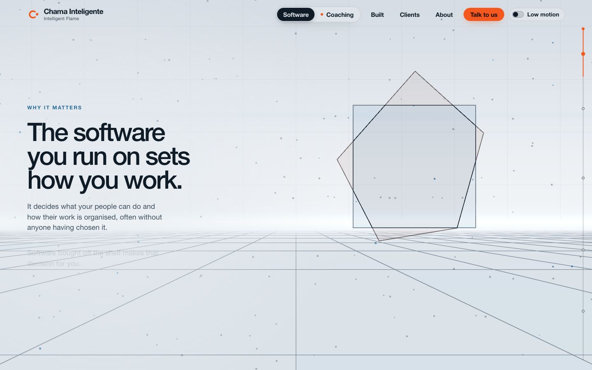
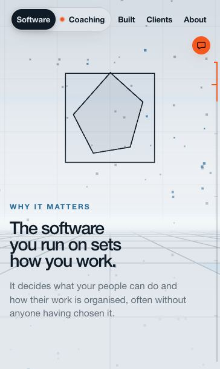

The chat was fifteen screens down the home page with nothing pointing to it. Now every page offers "Talk to us", only ever one at a time, and from the home page it jumps straight into the room. The room's headline reads "Talk to us."
Live on chamainteligente.comPR #192 merged772 tests pass
11headers carry it: the five animated pages, their five low motion twins, and the 404
1 tapfrom anywhere on the home page into the room, instead of about fifteen screens of scrolling
2design reviews, before and after. The second caught four things, all fixed before merge
Only one on screen at a time
Home heroBig button under the wordsOn screens at least 880px tall. Shorter ones get the header pill from the start.
ScrollingThe header pill takes overIt fades in as the hero button fades out, then rides along in every section.
Last sectionIt steps asideThat section's own button, or the room itself, is the one call there.
What it looks like, in production

Desktop: the ember pill, the only colour fill in the headerPhone, top: a disc beside the switch

Phone, scrolled: it drops under the pages
Where it goes
From
Goes to
Why
Home, /simple
The room, #talk
An instant jump under the site's fire, not a scroll that strobes through every section. The message box gets focus with a mouse; the headline gets it on touch.
Coaching, Built, Clients, About
/agent
The same agent full screen. Sending a Coaching reader to the home page would flip them to Software.
What the reviews changed
Phone disc gets real roomFloating under the header it cut into a chart on Coaching. The figures now leave space for it on every page.
Clean hand-offHero button and pill showed together for about 100px of scroll. The pill now waits until the button is mostly gone.
One ink for the familyThe disc's bubble matches the dark ink of the pill and the hero button.
Focus lands somewhere on touchAfter the jump, focus went nowhere. It now goes to the room's headline.
No hero button on phonesEvery line under the words takes room from the drawing above them.
Found on the way: /coaching's header already overflowed at 760 to 830px wide. Between 760 and 899px the lockup now shows its mark only, which fixes it. Below 1100px the pill is a disc. A bug I introduced, a variable name that blacked out the sky, was caught by screenshot before commit and is noted in the site skill.